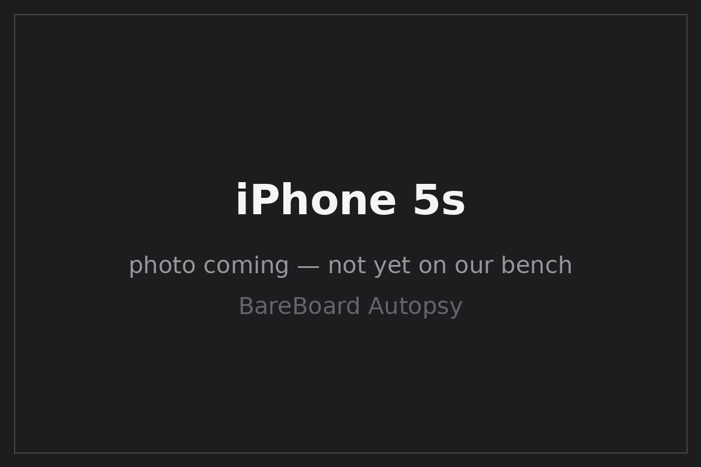

BareBoard Autopsy Report · Mobile Phones
iPhone 5s Confirmed
The first 64-bit smartphone — Apple's A7 (APL0698) with 1 GB of RAM, Touch ID, and a Qualcomm MDM9615M baseband Likely iFixit teardown. Announced September 10, 2013 and released September 20, 2013 Wikipedia. FCC ID: BCG-E2642A Confirmed FCC — Apple authorized FCC IDs (DOC-341019A2). We have never owned, opened, booted, probed, tested, or disassembled an iPhone 5s.

What is this thing?
The iPhone 5s is Apple's seventh-generation iPhone: the same 4-inch aluminum-and-glass body as the 5, rebuilt around the 64-bit Apple A7 — the first 64-bit processor in a smartphone — with the M7 motion coprocessor and the first Touch ID fingerprint sensor Wikipedia EDN teardown. (A note on the record: early launch-day teardowns briefly misidentified the M7's silicon before the correction landed; we cite the corrected understanding and assert no part number here.)
Timeline
- 2013-09-10 — iPhone 5s announced Wikipedia.
- 2013-09-20 — Released; FCC internal-photo exhibit released the same day Confirmed FCC DOC-341019A2.
- 2013-09-20 — Launch-day teardowns document A7 (APL0698), MDM9615M, WTR1605L, Broadcom BCM5976 Likely iFixit EDN.
- 2026-09-27 — This report published from public records; no unit on our bench.
Outside
B Home button with first-generation Touch ID (sapphire cover) Wikipedia
C 8 MP rear camera with True Tone dual-LED flash Wikipedia
D Aluminum unibody with glass inlays top and bottom
E Lightning connector, 3.5 mm headphone jack, nano-SIM tray
123.8 × 58.6 × 7.6 mm, 112 g Wikipedia.
Board
Public teardowns show the Apple A7 (APL0698) with 1 GB of RAM in package-on-package, a Qualcomm MDM9615M baseband with WTR1605L transceiver, and a Broadcom BCM5976 touchscreen controller Likely iFixit EDN. An iFixit X-ray teardown of the same generation corroborates the stacked-board construction iFixit X-ray teardown.
Chips
| Ref | Marking / identity | Role | Confidence | Dig deeper |
|---|---|---|---|---|
| SoC | Apple A7 — APL0698 | Applications processor (first 64-bit smartphone SoC) | Likely | iFixit teardown — no public datasheet (Apple custom silicon) |
| RAM | 1 GB (PoP with A7) | Working memory | Likely | EDN teardown — vendor varies by unit; no public datasheet claimed |
| BB | Qualcomm MDM9615M | LTE baseband modem | Likely | iFixit teardown — no public datasheet located |
| RF | Qualcomm WTR1605L | RF transceiver | Likely | iFixit teardown — no public datasheet located |
| Touch | Broadcom BCM5976 | Touchscreen controller | Likely | iFixit teardown — no public datasheet located |
| NAND | SK Hynix H2JTDG8UD3MBR (inspected 16 GB unit only) | Flash storage | Unknown | Not generalized — Apple multi-sourced storage across 16/32/64 GB options |
FCC
Apple's authorized-FCC-ID filing maps BCG-E2642A → iPhone 5s Confirmed FCC DOC-341019A2 (PDF). The internal-photo exhibit for this filing was released on 2013-09-20, the phone's release day Confirmed FCC DOC-341019A2 (PDF).
Debug / service modes
iPhones expose DFU and recovery/diagnostic states that Apple documents for restore and service workflows at a high level. We describe these only as publicly documented device states. We have never entered DFU on this model, we publish no exploit chain, no boot-ROM procedure, no authentication defeat, and no instructions for bypassing any lock. We listen; we don't knock.
Public findings & what we didn't do
- ✅ Mapped the FCC ID from Apple's authorized filing and noted the exhibit release date FCC DOC-341019A2.
- ✅ Assembled the teardown chip table (A7 APL0698, MDM9615M, WTR1605L, BCM5976) iFixit.
- ✅ Avoided repeating the early M7 misidentification without its correction.
- ❌ We have not opened, booted, probed, or photographed an iPhone 5s ourselves.
- ❌ We have not verified board revision, PMIC/RF supporting cast, or storage vendor on any unit.
- ❌ We have not measured power, captured a boot log, or entered DFU on this model.
By the numbers
| Metric | Value | Source |
|---|---|---|
| Display | 4″ 640×1136 | Wikipedia |
| SoC / RAM | Apple A7 (APL0698); 1 GB | Likely iFixit |
| Storage options | 16 / 32 / 64 GB (vendor varies) | Wikipedia |
| Weight / size | 112 g; 123.8 × 58.6 × 7.6 mm | Wikipedia |
| FCC ID | BCG-E2642A | Confirmed FCC DOC-341019A2 |
Glossary
| APL0698 | Apple's internal part number for the A7 package. |
| M7 | Apple's motion coprocessor, offloading accelerometer/gyro/compass processing from the A7. |
| MDM9615M | Qualcomm LTE baseband modem (Gobi 9x15 family). |
| WTR1605L | Qualcomm RF transceiver paired with the MDM9615M. |
| True Tone flash | Dual-LED flash (white + amber) for color-balanced flash photography. |
Sources & confidence
- FCC DOC-341019A2 — Apple's authorized FCC IDs (primary evidence).
- iFixit — iPhone 5s teardown (secondary, teardown-backed).
- EDN — iPhone 5s teardown (secondary, teardown-backed).
- iFixit — iPhone 5s X-ray teardown (secondary).
- iPhone 5s — Wikipedia (secondary).
| Claim | Confidence | Basis |
|---|---|---|
| FCC ID BCG-E2642A; internal-photo exhibit released 2013-09-20 | Confirmed | Apple's FCC filing (primary evidence) |
| A7 APL0698, 1 GB RAM, MDM9615M, WTR1605L, BCM5976 | Likely | Multiple independent teardowns; die-level verification awaits the bench |
| Dates, dimensions, Touch ID, camera specs | Likely | Corroborated secondary records |
| NAND vendor per unit | Unknown | Multi-sourced; not generalized |
| Board revision, supporting cast | Unknown | Awaits the bench |
Legal note
This report is a transformative educational summary of publicly available records. Product names and marks belong to their owners. We describe only publicly documented device states at a high level; we publish no exploit chains, boot-ROM procedures, lock bypasses, authentication defeats, firmware-extraction procedures, or unsafe service instructions. Our posture: we listen, we don't knock.
Related reports
- iPhone 6 / 6 Plus — the A8 successor generation
- iPhone 6s / 6s Plus — two generations later
- iPhone 11 family — six generations later